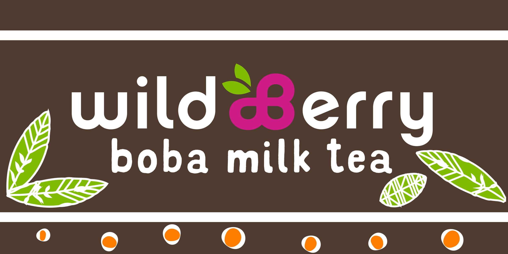
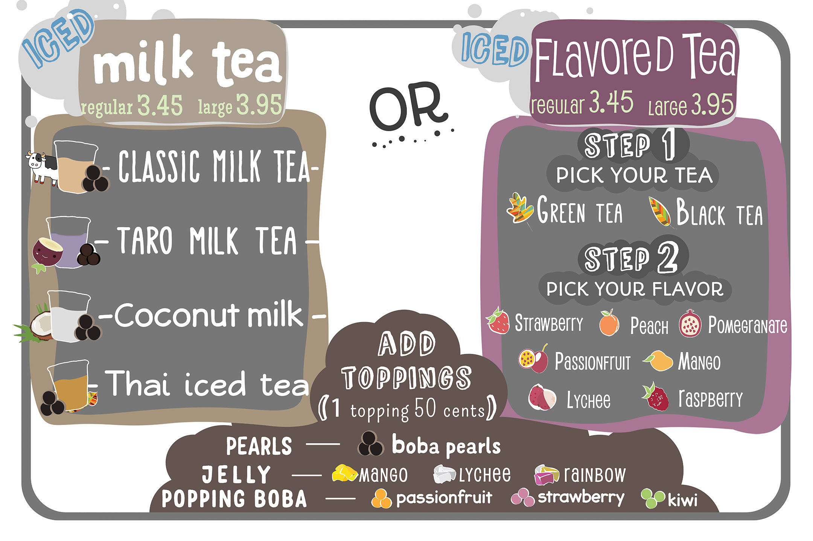
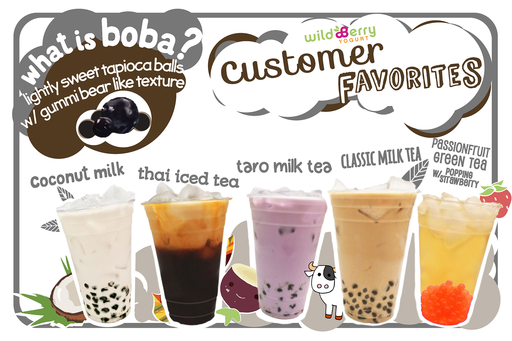

Boba Milk Tea Menuboard Design Process

Commissioned visual and graphic designs for WildBerry Frozen Yogurt of Menlo Park. Emphasis on creating fresh and playful brand identity. All photographic and artwork assets presented are self produced.
(Raymond Lam, Photoshop, Illustrator, 2019)

Current Tea Menuboard

Current Drink Menuboard

Old Tea Menuboard

Old Drink Menuboard